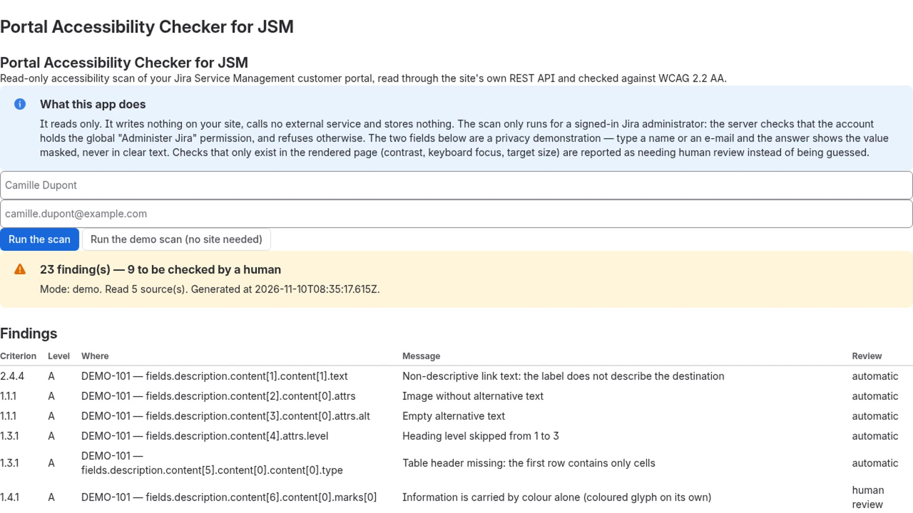

Tgg Labs / Demonstration files
Portal Accessibility Checker for JSM — demonstration files
Public project page of a read-only Atlassian Forge app that checks what your Jira Service Management customer portal exposes, against WCAG 2.2 AA. This folder hosts the demonstration video and its subtitles. Every statement on this page was measured on 11 November 2026.
What the app does
It reads the customer-facing content of your JSM portal through your site's own official REST APIs — request types, their fields, help texts and articles — and reports accessibility findings against WCAG 2.2 AA.
- Read-only. It writes nothing on your site, stores nothing and calls no external service.
- Administrators only. The scan is started from a button in the Jira administration page (Settings → Apps → Portal Accessibility Checker for JSM) and only for a signed-in Jira administrator: the server checks that the account holds the global « Administer Jira » permission and refuses otherwise. There is no public URL.
- A finding is an alert, never a verdict. Contrast, reading order and visible labels cannot be checked through the REST API, so the app does not rule on them: it reports them as needing a human review.
- Two read-only scopes are declared and nothing else:
read:jira-workandread:servicedesk-request.
Demonstration video
A real screen capture of the running app, recorded on 10 November 2026 against the production build, version 2.8.0.
- 140 s (2 min 20 s), 1920×1080, 25 fps, H.264 — 2 628 714 bytes,
md5
778455448579edb9f24732c52a8e105b. - Without sound. The audio track is silent — measured at −91.0 dB over all 13 441 024 samples — so the English narration is carried by subtitles, not by a voice-over and not by music.
- Subtitles. The file carries an English subtitle track; because some
players do not display embedded subtitle tracks, the same subtitles are published next to the
video: codegeist-demo.en.srt — 15 cues, 2 337 bytes,
md5
e8240afe033bc47e6b24e79d288aecc7. - No account data anywhere. The two optional fields stay empty in every frame
of the recording: the greyed text is the app's own placeholder, and the address shown belongs
to the reserved
example.comdomain. The findings on screen come from the app's bundled demo data (sample recordDEMO-101, modedemo), which reads no site at all. - The Jira administration chrome of the recording site is in French; the app's own interface and the narration are in English.
The frame below is taken from the same video. It shows the app panel with its two empty fields and the results of the demo scan on the bundled sample data — no real site, no real account, no personal data.

Install it
The app is shared publicly through Atlassian's installation link. Open the link, choose the site to test and the product Jira, and confirm. You must be an administrator of that site.
Install Portal Accessibility Checker for JSM (Jira)
Once installed, in Jira: Settings (gear icon) → Apps → Portal Accessibility Checker for JSM. To try it without any setup, click « Run the demo scan (no site needed) »: the same rule engine then runs on the app's bundled sample data and reads nothing from your site.
Source code
The whole source is public, under the MIT licence: github.com/tgg49099-dotcom/codegeist-jsm-accessibility-checker.
The code of this app was written with AI assistance. It is reviewed by an automated offline test suite — 13 test scripts, 344 checks, all green when measured on 10 November 2026, including counter-proofs that turn red when a rule is sabotaged.
Links
- Demonstration video (MP4): labs.chiffreo.ch/codegeist/codegeist-demo.mp4
- English subtitles (SRT): labs.chiffreo.ch/codegeist/codegeist-demo.en.srt
- Support, and what the app can and cannot check: labs.chiffreo.ch/support-pac-jsm.html
- Privacy notice: labs.chiffreo.ch/privacy.html
- Source code and documentation (MIT): github.com/tgg49099-dotcom/codegeist-jsm-accessibility-checker
Written 11 November 2026 for version 2.8.0 — Tgg Labs, personal projects, in Switzerland.